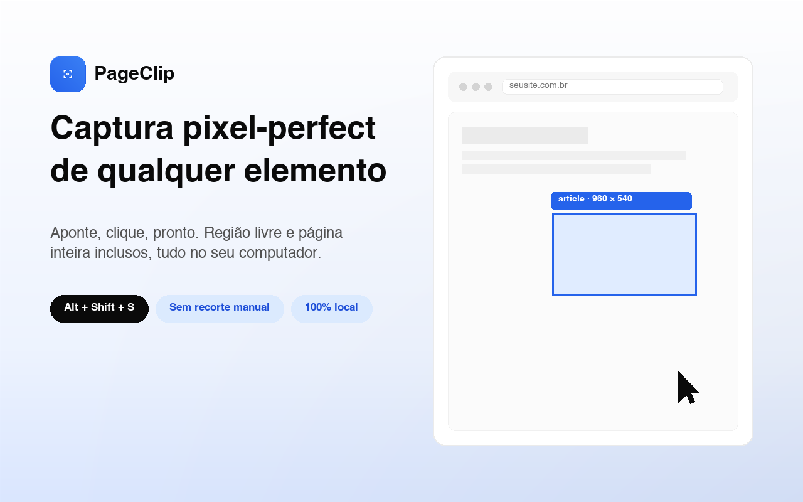

Extensão gratuita e open source para Chrome e Edge
Captura pixel-perfect de qualquer elemento
Passe o mouse, o elemento é destacado, clique e pronto. Sai um PNG só daquele pedaço, sem recorte manual. Região livre e página inteira inclusos.
- Sem conta
- Sem servidor
- 100% local

Feito para capturar do seu jeito
Como funciona
Atalhos
Privacidade de verdade
O PageClip não coleta, não transmite e não compartilha nenhum dado. Sem conta, sem servidor, sem análise de uso. As capturas ficam no IndexedDB local e os ajustes no armazenamento local do navegador. Todo o código é aberto (MIT) e está no GitHub para auditar.
Ler a política completaInstalar em 1 minuto
Prefere instalar manualmente? Baixe o repositório, abra chrome://extensions, ligue o Modo do desenvolvedor e use Carregar sem compactação na pasta do projeto.
Requer Chrome ou Edge 116 ou mais novo.